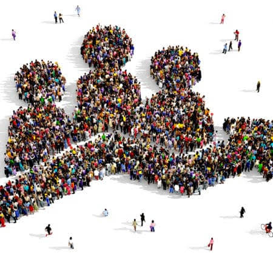
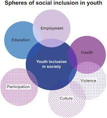
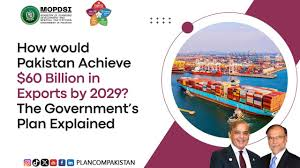
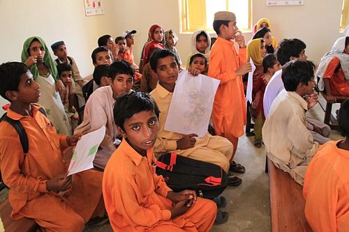
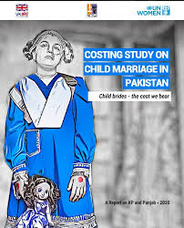
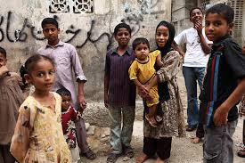

PAKISTANI YoUtH

Pakistani youth, who constitute a significant portion of the population (over 60%), face challenges like:
- unemployment
- outdated education
- limited opportunities
while also being increasingly connected to the global digital landscape.
This group represents a large portion of the population, with 29% falling within this age bracket. The Pakistani youth are seen as a vital asset with the potential to drive the nation's progress.
Key Aspects of Pakistani Youth:
Large Population:

Pakistan has a substantial youth population, with over two-thirds of the population under 30 and nearly one-third between 15 and 29.
Demographic Dividend:
This large youth population is considered a "youth bulge," which can be a source of demographic dividend if properly managed.
Potential for Progress:
The youth are seen as a driving force for national progress and are encouraged to participate in various aspects of the country's development.
Challenges and Opportunities:

While Pakistani youth hold significant potential, they also face challenges related to unemployment, skills gap, and lack of opportunities.
Engagement in Peacebuilding:

The youth are also being actively engaged in peace-building efforts and conflict resolution within the country.
Hope for the Future:

A significant portion of Pakistani youth are optimistic about the future and committed to staying in their country, hoping for a better life, according to surveys.
Government Initiatives:

In essence, the Pakistani youth are a crucial demographic with significant potential for the future of the nation, but also require focused attention and strategic interventions to fully realize their potential.
Pakistan's estimated population (excluding the disputed areas of Azad Kashmir and Gilgit-Baltistan) was 207,774,520 according to the provisional results of the 2017 Census of Pakistan. Pakistan is the world's fifth-most-populous country.
Population Pyramid of Pakistan as per the 2017 Pakistan Census
Youth Age
Majority of the population are part of the youth age bracket: in 2019, 34.8% were thought to be 14 or younger, though in 1990 this had been much higher at 43.7%. In 2010, the figure for those aged 24 or less was62.19%.
Effects
Many young Pakistanis are affected by serious issues around education in Pakistan; only 68% of Pakistani children finish primary school education and Pakistan has one of the lowest literacy rates in the world.Other areas with significant issues include:child marriage in Pakistan child labour in Pakistan street childrenmalnutrition health problems.
Unemployment poses an escalating concern in Pakistan. With a population exceeding 220 million and a workforce of approximately 65 million, the country faces challenges in offering an adequate number of job opportunities for its citizens. This issue is particularly acute for the youth, who constitute roughly 60% of the population and confront an unemployment rate of approximately 10%.
EDUCATION

Article 25-A of the Constitution of Pakistan obligates the state to provide free and compulsory quality education to children of the age group of 5 to 16 years. "The State shall provide free and compulsory education to all children of the age of five to sixteen years in such a manner as may be determined by law"
literacy Rate
Pakistan has one of the lowest literacy rates in the world and the second largest out of school population (22.8 million children) after Nigeria. Only68% of Pakistani children finish primary school education.
Child marriages

Women and girls in Qamber, Shadadkot, north-west Sindh, Pakistan
The practice of child marriage is prevalent in Pakistan, with the highest prevalence in the Sindh province. It disproportionately affects the daughter of a Pakistani family.Defined as marriage before the age of 18 years, child marriage is widespread in Pakistan and linked to spousal violence. Child marriage occurs most often in rural and low-income households where education is minimal.The Pakistan Demographic and Health Survey conducted from 2012 to 2013 reported that47.5% of currently married women aged 15 to 24 had been married before the age of 18. Moreover, of those child marriages, one-third of those women reported spousal violence.Another UNICEF report claims 70% of girls in Pakistan are married before the age of 16. As with India and Africa, theUNICEF data for Pakistan is from a small sample survey in the 1990s.
The exact number of child marriages in Pakistan below the age of 13 is unknown, but rising according to the United Nations.
Another custom in Pakistan, called swara or vani, involves village elders solving family disputes or settling unpaid debts by marrying off girls. The average marriage age of swara girls is between 5 and 9. Similarly, the custom of watta satta has been cited as a cause of child marriages in Pakistan.
According to Population Council, 35% of all females in Pakistan become mothers before they reach the age of 18, and 67% have experienced pregnancy – 69% of these have given birth – before they reach the age of 19. Less than 4% of married girls below the age of 19 had some say in choosing her spouse; over 80% were married to a near or distant relative. Child marriage and early motherhood are common in Pakistan.
Street children

Pakistan's major cities and urban centers are home to an estimated 1.2 million street children. This includes beggars and scavengers who are often very young. The law and order problem worsens their condition as boys and girls are fair game to others who would force them into stealing, scavenging, and smuggling to survive. A large proportion consumes readily available solvents to stave off hunger, loneliness, and fear. Children are vulnerable to contracting STDs such as HIV/AIDS, as well as other diseases. The number of street children in Pakistan is estimated to be between 1.2 million and 1.5 million. Issues like domestic violence, unemployment, natural disasters, poverty, unequal industrialization, unplanned rapid urbanization, family disintegration, and lack of education are considered the major factors behind the increase in the number of street children. Society for the Protection of the Rights of the Child (SPARC) carried out a study which presented 56.5% of the children interviewed in Multan, 82.2% in Karachi, 80.5% in Hyderabad, and 83.3% in Sukkur were forced to move on to the streets after the 2010 and 2011 floods.